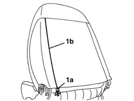
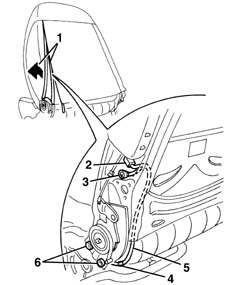
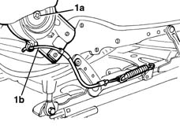

7045A18 FRONT SEAT BACKREST ASSEMBLY (ONE), LEFT OR RIGHT - R.R.
- Path
- Procedures > 70 FITTINGS > 7045 FRONT SEATS > 7045A front seat assembly > 7045A18 FRONT SEAT BACKREST ASSEMBLY (ONE), LEFT OR RIGHT - R.R.
- Kind
- repair procedure (removal / refitting; the operation number is the code)
- Applies to
- all engines; all production periods
- Interactive page
- https://sloeber94.github.io/elrnDB-lYpsln/en/#/2429609
Applies to: all engines; all production periods
 Removing
Removing
 Refitting
Refitting7045A44 seat interior guard - r r
7045A56 LEVER controlling DRIVER'S seat height adjustment device - R.R .
7045A43 seat exterior guard - r r
1. Open the hinges (1a) and (1b) along sections (1c) and (1d).

Applies to: all engines; all production periods
1. Move the cover with padding slightly.
2. Disconnect the electrical connections from the Air Bag module.
3. Disconnect the electrical earth connection.
4. Release the wiring retainer.
5. Release the wiring from the frame.
6. Undo the backrest fixing bolts on both sides of the seat.

Applies to: all engines; all production periods
1. Remove the backrest (1a) after having disconnected the end of the cable (1b).

Applies to: all engines; all production periods
Refitting
RemovingCheck that the squab is not damaged.
Position the backrest and connect the end of the cable.
Tighten the bolts fixing the backrest.
Position the wiring on the frame and secure it using the retaining bands.
Connect the electrical earth connection to the frame.
Connect the electrical connection to the Air Bag module.
Position the cover and close the hinges.
Move the seat through all its various settings to ensure that movements take place without binding or noise.
7045A48 LEVER and TRIM for folding backrest - R.R.
7045B10 l/h or r/h front seat head restraint - r+r
7045A43 seat exterior guard - r r
7045A56 LEVER controlling DRIVER'S seat height adjustment device - R.R .
Topics linked from this page (6)
- 7045A24 squab knob - r r
- 7045A43 seat exterior guard - r r
- 7045A44 seat interior guard - r r
- 7045A48 LEVER and TRIM for folding backrest - R.R.
- 7045A56 LEVER controlling DRIVER'S seat height adjustment device - R.R .
- 7045B10 l/h or r/h front seat head restraint - r+r